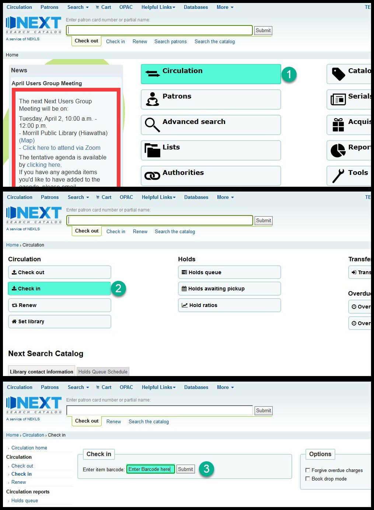
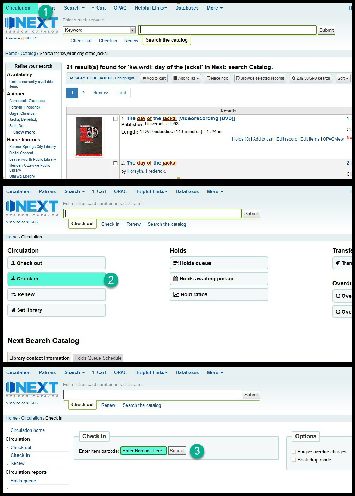

Three ways to access check-in¶
A. From the flexible input box¶
From most pages you can set the flexible input box to Check in and then start entering barcode numbers in the input box.
B. From the home page¶
From the home page you can click on the “Circulation” button and then click on the “Check in” button on the circulation page.

C. From any page¶
From any page you can click on the “Circulation” link in the page header and then click on the “Check in” button on the circulation page.
